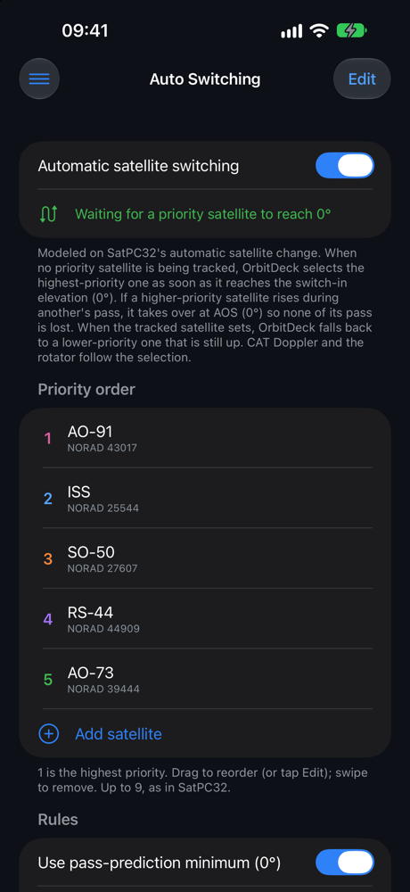
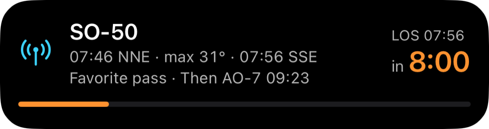
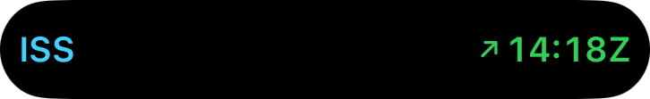

Documentation
This guide covers OrbitDeck for iOS 1.1. OrbitDeck is organized as a menu of screens grouped into Live, Passes, Analysis, Operating Tools, Sky & Space, and Catalog & Configuration. Rig control, the rotator, digital modes and logging each have their own detailed page, linked from the sections below.
Getting started
On first launch, OrbitDeck downloads a satellite catalog, sets a default station and, on a new install, opens the station readiness checklist. To get useful results:
- Set your station location in Settings → Observer station.
- Enter your callsign in Settings → Operator identity. Transmitting, logging and status reports need it; receive-only packet monitoring does not.
- Star a few satellites on the Satellites screen (for example the ISS and an active FM or linear bird). Favorites drive Home, Sky Radar, the pass timeline and the schedules.
- Open Home to see live look angles and your next qualifying pass.
The in-app Help covers the same ground in short articles, and links back to this page.
The menu
Every screen is reached from the menu. On iPhone, tap the Menu button at the top left of any screen to open it; tap a row to go to that screen, or tap the × (Close menu) button at the top left to return to the screen you came from. The current screen is highlighted. On iPad the menu stays in a sidebar.
- LIVE — Home, 3D Globe, Sky Radar, Grid Finder.
- PASSES — Next Passes, Sky at a Glance, Daily Schedule, Ground Track, Pass Progression.
- ANALYSIS — Orbital Analysis, Orbital History, Illumination, Orbital Zones, AO-7 Mode, Mutual Windows, Sun/Moon Transits, Astronomy, Sky Map, Conjunctions, Workable.
- OPERATING TOOLS — Radio, Log, SSTV Images, Planning, Tools, Graphing Calc, Tiny BASIC, Activations / QRZ, AMSAT Status, Nearby & DX, OSCARLOCATOR Sim, OSCARLOCATOR Reference Orbits, Learn, References, Exports, Notes.
- SKY & SPACE — Sun / Moon, Celestial, EME, Space Wx, MUF / HF Prop, Propagation.
- CATALOG & CONFIGURATION — Satellites, New Launches, Sites, Calibrations, Auto Switching, Settings, Help, About.
The ↻ button at the top right of the menu (Update orbital elements) downloads the latest element sets for the whole catalog; the note under UPDATING ELEMENTS shows when they were last updated. The satellite switcher in a screen's toolbar changes the selected satellite everywhere.
Station readiness
The station readiness checklist shows what is set up and what isn't, and opens automatically on the first run of a new install (upgrading users don't see it automatically). Open it any time from Settings → Station readiness or from Help.
- It checks your station location, orbital element data, favorites, callsign, QRZ, LoTW upload, Cloudlog / Wavelog, notifications, the CAT radio, the rotator and the audio interface.
- Each row is marked OK (green, ready), CHECK (amber, needs attention), MISSING (red, blocks useful results) or OPTIONAL (gray). Tap a row to go to the screen that fixes it.
- Check again re-reads everything; Readiness report (PDF) shares a printable summary.
Setting your station
Your observer station drives every observer-relative screen: Track, passes, MUF, mutual visibility, and more. Open Settings → Observer station. Changes are saved automatically.
Location source
Choose how OrbitDeck resolves your position:
- Fixed site — a named location you enter and edit manually. This is preserved and is the default.
- Always use current location — OrbitDeck follows your device's GPS. While following, the station is named
Current location, its fields are managed automatically, and your fixed site is preserved so switching back restores it exactly.
Entering coordinates
In fixed mode you can enter your position three ways:
- Type a latitude and longitude in decimal degrees.
- Type a Maidenhead grid square (4, 6 or 8 characters, e.g.
FM18orFM18lv) and tap Set. OrbitDeck places you at the grid center. - Tap Use Current Location for a one-time fix.
Set your altitude for the most accurate look angles. If a location fix fails, a short explanation appears under the fields instead of a raw error code.
Grid squares & VUCC
OrbitDeck shows your six-character Maidenhead locator wherever your station is displayed, including the Station card on Home.
Under ARRL VUCC rules, a station physically on the line between two grid squares may count both, and a station on the corner where four grids meet may count all four. When your position is on a boundary, the Home Station card lists every grid you may claim, labeled On grid line or On grid corner.
Location, DXCC & subdivisions
While you are following your current location, OrbitDeck reverse-geocodes your position and adds three rows to the Home Station card, to Settings → Observer station, and to the Grid Finder readout:
- DXCC — your current DXCC entity (prefix and name).
- Primary subdivision — your state/province.
- Secondary subdivision — your county/district.
The subdivisions use the names LoTW/TQSL expect. Notably, Connecticut resolves to the correct legacy county (from your town) rather than the newer census "planning region," and the independent cities of Virginia, Maryland (Baltimore), Missouri (St. Louis) and Nevada (Carson City) are named correctly and kept distinct from same-named counties.
Units, times & display
These options live in Settings → Display.
- Units — Automatic (region), Metric or US customary. Distances, altitudes, speeds, lengths and temperatures follow it throughout the app, including the Tools calculators; Automatic uses US customary in the United States. Band names such as "30 m" are never converted, and exported files (CSV, JSON, ADIF and PDF reports) stay metric with the units in their column names.
- Show times in local time — all times are UTC by default, the amateur-satellite convention. Turn this on to show every time in your device's zone, following your 12/24-hour preference. Pass lists (Daily Schedule, Next Passes, Home upcoming favorites) then show the other zone as a secondary clock. Tiny BASIC always uses UTC.
- Next pass on Lock Screen and Dynamic Island — the Live Activity.
- Keep screen awake on Home — prevents auto-lock while Home is showing, so you can leave it up as a live display during a pass. Independently of this option, the screen also stays awake automatically on any screen while FT4, SSTV, packet, the CW decoder or a pass recording is running, and is released when the last one stops.
Satellites & catalog
The Satellites screen lists the catalog and lets you mark favorites. Satellites recently heard on the AMSAT status board are marked in the list. The New Launches screen surfaces recently launched objects (including six-digit NORAD IDs).
Choose your element source in Settings → GP element source:
- AMSAT — the AMSAT daily bulletin GP feed (default).
- CelesTrak — select a group such as the amateur satellites set. OrbitDeck honors CelesTrak's limit of one download per dataset every two hours; the limit applies to each group separately, so switching groups fetches the new group right away.
- Custom — a URL to your own OMM JSON (it must start with
https://).
Adding satellites and elements
The Add menu on the Satellites screen offers Search CelesTrak Online, Add Manual Satellite, Manual Transponders, Import Elements (OMM / TLE), Imported Elements and Cache all transponders (SatNOGS). You can also recover elements from a state vector on the Tools screen.
- Imported elements are kept. Elements you import survive relaunches and catalog updates. Each one is used only while its epoch is newer than the downloaded elements for that satellite; once the feed catches up it is removed automatically. Add → Imported Elements lists them; swipe one to delete it and the downloaded elements take over. Imports for a manual satellite update that satellite instead.
- Bad data is skipped. Malformed entries in a feed or import (impossible or missing values) are skipped and counted rather than breaking the catalog. TLE drag terms are read correctly, and a TLE export skips any satellite whose NORAD ID doesn't fit the TLE format. Manual satellite entry warns about NORAD IDs above 339999.
Passes & tracking

- Home — live look angles, the next qualifying pass, and your favorites' upcoming passes (see The Home screen).
- Track — a real-time polar sky plot; toggle north-up or compass-up. AOS/LOS and the live position are shown as small direction-of-travel arrows.
- Daily Schedule — every favorite's passes grouped by day and ordered by AOS. It opens snapped to the next pass, keeps a week of past days above, and fills in as it computes.
- Next Passes and Pass Detail — pass lists with polar plots and elevation-vs-time profiles; Pass Detail colors the profile by whether the satellite is sunlit or in eclipse.
- Ground Track — the sub-point path with a live heading marker and a geographically accurate footprint (the true 0°-elevation boundary), plus your favorites' footprints.
- Pass Progression — passes across the coming days.
- Sky Radar — every favorite plotted on one all-sky chart, each in its own color (the same color it has on the map, globe and timelines).
- Grid Finder (Live) — a high-precision GPS tool that guides you onto a Maidenhead grid line or corner with a compass arrow and a proximity map, for VUCC roving.
Set the Minimum elevation in Settings → Pass prediction to filter marginal passes.
Geostationary satellites
A geostationary satellite such as QO-100 never rises or sets. When it is above your horizon, Home shows Continuously visible · max with its elevation instead of an AOS or LOS countdown, and Track shows its visibility as continuously visible.
The Home screen
Home is the live dashboard for the selected satellite. From the top:
- The selected satellite and, while automatic switching is on, an AUTO banner with its status, the next planned switch, and a Turn off button.
- Live tracking — azimuth, elevation, range and range rate, a sky plot, and the AOS or LOS countdown.
- Live Doppler and Transponder cards for the chosen transponder (see Radio & Doppler).
- The station cards for the equipment and features you have set up: rig control, rotator, logging, audio and digital modes.
- Report AMSAT status — a one-tap public report for the selected satellite (see AMSAT status).
- With favorites starred: Space weather, Overhead now (favorites above the horizon, with LOS), Upcoming favorite passes and the Pass timeline.
- Station, Next qualifying pass and Elements.
Home refreshes when you come back from the background, and passes drop off the lists once they end.
Home station cards
The station cards appear on Home as you configure them. Their full guides are on the Rig Control, Rotator, Logging and Digital Modes pages; this section covers the controls you use during a pass.
Live Doppler: SSB | CW, passband and HOLD/TUNE
- On a linear transponder, the SSB | CW switch on the Live Doppler card sets the mode. With a CAT radio connected it puts both legs in that mode; it also sets the Log QSO card's mode and default RST (59 or 599).
- The Passband offset control moves your operating point through a linear passband (centered by default; an inverting transponder walks the uplink the other way). Use the ± buttons (hold to repeat), choose a step, or tap the value to type it.
- Manual HOLD/TUNE is for radios without CAT: choose Hold TX or Hold RX, type the dial you're holding (in MHz, kHz or Hz), and read the other leg's corrected dial live.
- Calibrate this satellite opens downlink/uplink calibration sliders shared with the Calibrations editor.
Rig control (CAT) card
- The header shows the connection state and a connect/disconnect switch. A two-radio station shows a status row for each radio.
- Tune mode — the Tune: button changes how Doppler is applied, live: Full (follow downlink), Full (follow uplink), Downlink only, Uplink only or Hold (no frequency writes at all). The button is tinted when you're not in Full.
- Beacon — when the satellite has a beacon or telemetry downlink, one tap tunes the radio to it. On Icom satellite rigs, receive-only transponders and beacons are tuned with satellite mode off, on MAIN.
- Switch radio to …? — if you pick another satellite while the radio is engaged on a pass, OrbitDeck asks before retuning the radio and moving the antenna: Switch or Keep. Until you answer, the card shows Radio tuned to …. Automatic switching still switches without asking.
- At passband edge warns when you've tuned to the edge of a linear passband.
- Tilt to tune passband (linear transponders, optional) — roll the phone to move through the passband; hold it level to stop.
- Track Doppler turns Doppler tuning on or off.
- If OrbitDeck couldn't confirm that the radio unkeyed when a link dropped, an amber warning stays on the card until you tap Dismiss (see Transmit safety).
Stop all
While anything is running, the rig control card (or, with no CAT radio, the rotator card) shows a red Stop all button. After you confirm Stop everything?, it releases PTT, stops FT4, packet and remote-voice transmit, ends rigctld/rotctld client control, disconnects the radio, and parks and disconnects the rotator.
Rotator card
Shows the rotator's state and the commanded bearing, a Target selector (Satellite, Sun, Moon or Manual) and Manual control for jogging, go-to, Stop, Park and resuming tracking. With position read-back on, it warns Rotator isn't following the command if the rotator stalls. If a pointing command fails, the card says it is retrying; OrbitDeck tries again every 2–10 seconds until it gets through. See the Rotator page.
Log QSO
The quick-entry card is prefilled from the selected satellite, transponder, mode and your grid. Callsigns tapped in the CW decoder or packet card land here. See the Logging page.
Audio and digital-mode cards
The Pass recording, SSTV, FT4 (full duplex), CW decoder, Packet / APRS and Remote audio (voice) cards are controlled in Settings → Audio features, where each one is Auto, Always or Hidden:
- Auto (the default) shows the card only while a USB audio interface or an Icom network-audio radio is connected.
- Always shows it without an interface; it then uses the built-in microphone (remote audio still needs an Icom network radio).
- Hidden keeps it off Home even with an interface connected.
Each card's options are in its Setup section.
- CW decoder — tap Start. Under Setup → Decoder, choose DeepCW (the default: a neural decoder that copies 400–1200 Hz, weak signals and uneven fists included, with text about two seconds behind the audio) or Classic (tone search with AFC, filter bandwidth, squelch and a speed range or fixed speed). On a linear transponder, set the Live Doppler card to CW first, then tune so the CW pitch falls in the decoder's range. If the DeepCW model is unavailable, OrbitDeck uses Classic. Tap an underlined callsign to put it in the Log QSO card with mode CW; Copy and Share transcript export the text.
- Packet / APRS — choose a Connection (Built-in modem, BLE KISS or KISS TCP) and, for the built-in modem, the Modem (Auto, 1200 AFSK or 9600 G3RUH). The Monitor, Stations and Map views show traffic, heard stations and their positions; Pass log keeps every frame per pass with statistics and export. Monitoring works without a callsign; sending, beacons and the satgate need one. KISS TCP defaults to port 8001 (Direwolf); UZ7HO soundmodem uses 8100.
- FT4 (full duplex) — Transmit, Auto-seq and Tune controls, the waterfall and Band Activity list. Tune sends a carrier of at most 10 seconds; it needs Transmit on, your callsign set and a transponder that isn't FM-only or receive-only. The TX watchdog stops transmitting when nothing addressed to you has been decoded for 6 minutes (adjustable from 2 to 15).
- Pass recording — records the pass and also takes a Voice memo (up to 2 minutes), which adds a QSO stub to the log for you to complete.
- Remote audio (voice) — listen to an Icom network radio and press and hold HOLD TO TRANSMIT to talk. The radio keys only once your audio has started playing. Transmit stops when you lift your finger, if the press is interrupted, when OrbitDeck goes to the background, or after 3 minutes.
Full details are on the Digital Modes page.
Pass timeline
The Pass timeline card on Home is a KlaTrack-style chart of your favorites' passes: elevation against time from 30 minutes ago to 3, 6 or 12 hours ahead (the Span control). Each satellite has its own color, the same one it uses on the map, Sky Radar and globe. The Colors/Eclipse button switches to sunlit (gold) and in-eclipse (gray) shading. Tap a pass to select that satellite.
Automatic satellite switching

Modeled on SatPC32's automatic satellite change, Auto Switching (Catalog & Configuration) selects satellites from a priority list as their passes begin, so Home, CAT Doppler, the rotator and the Live Activity follow the sky without you touching the phone.
- Turn on Automatic satellite switching.
- Tap Add satellite to build the priority list (up to 9, as in SatPC32). 1 is the highest priority; drag to reorder and swipe to remove.
- Set the switch-in elevation: Use pass-prediction minimum, or turn it off and set Switch-in elevation.
- Choose what happens when Higher priority rises during another satellite's pass: Switch immediately (SatPC32's behavior), with Take over at setting the elevation it must reach (0° is AOS; a negative value such as −5° switches early so the radio and rotator are already there), or Finish current pass.
- Optionally turn on Pause after a manual selection to keep a satellite you pick yourself while it's above the horizon (or for 15 minutes if it isn't).
When the tracked satellite sets, OrbitDeck falls back to a lower-priority one that is still up. PLANNED SWITCHING · NEXT 12 h simulates the current rules: the strip under the curves shows which satellite would be selected, and orange entries are conflicts resolved by priority. The screen also shows the last switch and its reason. On Home, the AUTO banner shows the next switch and has a Turn off button.
Live Activity & Dynamic Island
Turn on Settings → Display → Next pass on Lock Screen and Dynamic Island to show one Live Activity for your next pass. It needs iOS 18 or later.


What it shows
- Before AOS — a countdown beside the AOS clock time it counts to, the AOS/LOS times and directions, the maximum elevation, and "Then …" for the following pass.
- During the pass — an "Up for" timer counting down to LOS beside the LOS time, and a progress bar through the pass.
- Dynamic Island — the compact view shows the satellite and the AOS clock time (the LOS time during the pass); the expanded view has the full countdown. When several Live Activities share the island, OrbitDeck's minimal view is a ring that fills from AOS to LOS.
- Apple Watch — on a paired watch that shows Live Activities in its Smart Stack, a compact layout with the name, the live countdown, pass progress and maximum elevation.
Because the countdowns sit next to the clock times they count to, every layout stays correct through AOS and LOS without the app redrawing it.
Which satellite
With auto switching on, it follows the satellite auto switching has selected and then each one it will switch to, with the switch time. Otherwise it shows the next pass of any favorite (the selected satellite if you have no favorites). Changing favorites or priorities updates it.
While OrbitDeck is closed
- iOS doesn't let OrbitDeck run in the background, so the activity carries the next few passes with it: it runs through the current pass by itself and moves on to the next one at LOS.
- Past those, it needs OrbitDeck to run again — opened, or refreshed in the background by iOS (when and how often is up to iOS, and it needs Background App Refresh on; Settings explains when it's off).
- When its information may be out of date, it's dimmed with Open OrbitDeck to update. When it has no more passes it shows Open OrbitDeck to plan more.
- iOS ends Live Activities after 8 hours and lets only an open app start one, so opening OrbitDeck renews it.
Starting the next pass automatically (iOS 26)
On iOS 26 and later, Start next pass automatically while OrbitDeck is closed also schedules a Live Activity for a later pass. iOS starts it by itself 15 minutes before AOS (or the auto switch, but not before the earlier pass ends) with an alert, so it doubles as a pass reminder. One pass is scheduled at a time; opening the app plans the next. Until OrbitDeck next runs, the earlier activity may still show beside it. For an alert at every AOS, use pass alarms.
Tapping it
Tap the Live Activity (on the Lock Screen or in the Dynamic Island) to open OrbitDeck on Home with that satellite selected.
Radio & Doppler
The Radio screen provides:
- A four-dial DX Doppler display and a single-station RX/TX Doppler playbook.
- Per-satellite calibration. Your calibration is a single combined oscillator correction (radio plus satellite) that you can measure from either the downlink or the uplink; both offsets fold into the receive dial and nothing is added to the transmit dial. It is stored per satellite and applied to every live Doppler readout, with an unobtrusive note when it is in effect.
- A link budget with a per-elevation margin curve.
- Transponder listings from the SatNOGS database, with two-way transponders shown first.
The Calibrations screen (Catalog & Configuration) is a bulk editor: an editable downlink/uplink table for every satellite, favorites first and searchable, with CSV import and export for entering many calibrations at once.
On Home, the Live Doppler card carries the SSB | CW switch, passband tuning and the no-CAT HOLD/TUNE calculator described under Home station cards.
Rig control (CAT)
OrbitDeck Doppler-tunes your transceiver over a Bluetooth LE serial adapter, an Icom network (Wi-Fi) connection, the IC-705/IC-905's built-in Bluetooth, or a Hamlib rigctld server — one full-duplex radio, one radio using split VFOs, or two radios (including a satellite rig as one leg, such as an IC-821 on the uplink and an IC-705 on the downlink). It follows your dial (the "One True Rule"), picks receive modes from the transponder, sets per-satellite CTCSS and data modes for FT4 and packet, and leaves the radio clean on disconnect.
Configure it in Settings → Rig control → CAT / rig control and operate it from the Home Rig control (CAT) card. CAT works only while OrbitDeck is in the foreground. See the Rig Control page for supported radios, adapters and tuning options.
Rotator control
OrbitDeck steers an az/el antenna rotator to follow the pass — GS-232 (including azimuth-only controllers), Easycomm I/II/III, SPID and SAEBRTrack over a Bluetooth LE serial adapter, or rotctld (Hamlib), PstRotator and OZ9AAR URC over the network. It pre-positions before AOS, leads the bird to cover mechanical lag, parks on LOS, and handles flip mode and 0–360 / −180…+180 / 0–450° ranges with alignment offsets, magnetic correction, a deadband and minimum-elevation gating. If a pointing command fails, it is retried every 2–10 seconds.
In Settings → Rotator control → Antenna rotator, Control & diagnostics has Manual control, Self-test, Monitor and Read back position (where the protocol supports it). The Target selector on the Home rotator card points at the Satellite, the Sun, the Moon or a manual bearing, for sun-noise checks and EME. See the Rotator page.
Network servers (rigctld & rotctld)
OrbitDeck can run a rigctld server (TCP 4532, at the bottom of the CAT settings) and a rotctld server (TCP 4533, in the rotator settings) so Gpredict, SatPC32, WSJT-X or a logger on your local network can read and drive the radio and rotator through OrbitDeck's links. Both are off by default and run while OrbitDeck is in the foreground (or while a pass recording, decoder or remote voice keeps audio running in the background).
- Client approval. With Require approval for new clients on (the default), a client on another device waits until you answer the Allow network client? prompt, which appears on any screen: Allow once, Always allow or Deny. Unanswered requests are denied after 30 seconds or when OrbitDeck goes to the background. Clients on the same device are always allowed. Always allowed addresses are listed in the server settings; swipe one to remove it.
- Local network only. Connections arriving over a VPN tunnel or cellular are refused.
- Network PTT is a separate opt-in, Allow PTT from network clients (off by default). A client's key is released when it disconnects, the server stops, OrbitDeck goes to the background, or after 3 minutes keyed; a client's
T 0releases only its own key. With PTT off, PTT commands are refused.
Transmit safety
- One transmitter at a time. FT4, FT4 Tune, packet, remote voice and network clients all key through one gate, and only one of them can hold it. If another feature holds the transmitter, the request is refused with Transmitter in use by … — not keyed.
- Stop always unkeys. Stop, Stop all, disconnect and a dropped link send PTT-off before anything else. If the unkey can't be confirmed, OrbitDeck retries it when the radio reconnects and shows a warning on the rig card.
- Maximum key times. Every key has a time limit, and no key lasts longer than 4 minutes. Remote voice and network clients are limited to 3 minutes and Tune to 10 seconds. FT4 also has a TX watchdog that stops transmitting when nothing addressed to you has been decoded for a while (6 minutes by default).
- Background. When OrbitDeck goes to the background, remote voice, Tune and network-client keys are released. FT4 and packet sessions you started keep running.
- Sensible gates. PTT refuses to key on a transponder without an uplink; FT4 won't start on FM-only transponders; FT4 Tune needs Transmit on and a callsign. Packet monitoring needs no callsign, but every transmit path checks for one. The packet PTT watchdog defaults to 10 seconds (1–60).
Always listen before you transmit and use the minimum power needed.
Logging & uploads
OrbitDeck keeps a satellite QSO log on device with the Home Log QSO card and a dedicated Log screen. It uploads to LoTW — signing on device from your callsign certificate (.p12) — and to Cloudlog/Wavelog, with ADIF import/export. New in 1.1:
- Awards (from the Log screen) — QSOs, satellites, VUCC grids, WAS (50 states plus DC) and DXCC, worked versus LoTW-confirmed, with per-satellite drill-down and CSV/PDF export.
- LoTW station location — pick your DXCC entity and its subdivisions as LoTW lists them, plus an optional IOTA reference.
- Re-send all to LoTW or Cloudlog; editing a QSO clears its upload flags, and importing a LoTW download marks matching QSOs confirmed.
- Log report (PDF) to print or share; voice memos that become QSO stubs; DXCC entity and country on every QSO; QRZ name and US state fill; default RST by mode.
- Log integrity — save errors are shown in a banner, and a log file that can't be read is moved aside (renamed
<name>.corrupt-<timestamp>.json) rather than overwritten. - Honest uploads — a Cloudlog/Wavelog upload counts only if the server reports every QSO imported; otherwise nothing is marked uploaded and the server's messages are shown. Cloudlog/Wavelog URLs must use https, except http to a server on your local network (with a warning that the key is sent unencrypted).
See the Logging & Uploads page.
Digital modes & audio
With a USB audio interface, an Icom network-audio radio, or (for most features) the built-in microphone, OrbitDeck can:
- Decode CW with the DeepCW neural decoder or the Classic decoder, alongside recording, FT4 and SSTV.
- Work packet and APRS through satellites and the ISS with the built-in 1200/9600 baud modems or a KISS TNC over Bluetooth LE or TCP, with an APRS map, a per-pass log, alerts and an optional receive-only satgate.
- Work full-duplex FT4 on linear transponders with signal subtraction, a deep re-decode, DT filtering, a TX watchdog and Tune.
- Decode SSTV, including Martin M3/M4 and Scottie S3/S4, with automatic start and stop by elevation and a gallery with Photos export.
- Record a pass and take voice memos.
OrbitDeck watches for a stalled or silent audio input, restarts capture, and warns on the card. FT4 runs at nearly 100% duty cycle, so the app reminds you to limit power. See the Digital Modes & Audio page.
Activations, QRZ & AMSAT status
Activations (hams.at)
The Activations / QRZ screen lists upcoming satellite activations from hams.at. For each, Can I work it? checks the mutual-visibility window from your station, Operating detail opens the paired sky plots, and Star satellite adds the bird to your favorites. If hams.at can't be reached, the last feed is shown with its age.
Your own activations and skeds
Under My activations & skeds, tap Add an activation or sked… to record your own plans. They are stored on the device, listed with the hams.at feed and included in backups. Tap the bell on any row for reminders 60, 30 and 10 minutes before it starts (notifications must be allowed).
Posting to hams.at
Tap Post an activation to hams.at…, choose the satellite, and enter your callsign, grid(s) and the pass time. You may enter the observer position as a Maidenhead grid or as latitude/longitude, and activate a grid line (2 grids) or corner (4 grids). Posting requires your personal hams.at API key (from the hams.at Settings page), entered in Settings → hams.at or on the posting screen and stored in the iOS Keychain. OrbitDeck posts only when you confirm; the alert is public and attributed to your callsign.
QRZ lookup
The QRZ Lookup tab looks up a callsign's name, location and grid using your QRZ XML-subscription credentials (entered in Settings).
AMSAT status
The AMSAT Status screen reads the status board at status.amsat.org. Status Board shows the Community status board over a Window of 3 to 72 hours: for each satellite, how many reports heard it, how long ago it was last heard, and how many distinct reporter grids there were. Tap a satellite to select it in OrbitDeck. Report Status files a public, attributed report for the selected satellite.
You can also report with one tap from Home's Report AMSAT status card, which follows the selected satellite and offers every report type (Heard, Telemetry Only, Not Heard, Crew Active). Reports are public and attributed to your callsign and grid, and are sent only after you confirm.
Weather
OrbitDeck uses Open-Meteo for local weather and cloud cover (your location is rounded to about 1 km before it is sent).
- The Planning screen has a Local weather section: temperature, cloud cover, wind and precipitation at your station, and when it was updated. Offline, it shows the last forecast with its age.
- In Planning's Visible passes and on Sun/Moon Transits, each event has a forecast cloud-cover badge for the next 48 hours, so you can tell whether an optical pass or transit is worth setting up for.
Nearby & DX
The Nearby & DX screen (Operating Tools) collects live feeds around your station in four tabs:
- APRS — a receive-only APRS-IS connection with a range filter around your station. Stations are listed by distance or time with bearing, and messages heard are shown. Fixed stations beacon every 10–30 minutes, so the list fills over time.
- DX Cluster — a telnet DX cluster (a default node or your own), logging in with your callsign, with a spot list, a filter and a command line for cluster commands.
- ADS-B — aircraft from your own dump1090, readsb or tar1090 receiver's
aircraft.jsonon your local network, with distance, bearing and elevation. No outside service is used. - Telnet — a general telnet console.
Orbital analysis
The Analysis group includes orbital elements and derived quantities (J2 nodal and apsidal rates, beta angle, eclipse fraction, local time of the ascending node), equator crossings, Sun/Moon transits, illumination, orbital zones, conjunctions, AO-7 mode timing, mutual-visibility windows, and workable grids, states and DXCC entities. Orbital Analysis also shows the Element set & launch details: the element-set number, the epoch age and the satellite's launch siblings. Orbital History charts archival elements from Space-Track if you provide credentials.
On AO-7 Mode, the phase uncertainty reflects disagreeing reports rather than showing zero.
Space weather & propagation
Space Wx shows live values: 10.7 cm solar flux, planetary Kp and the A index from NOAA SWPC, and the sunspot number from the hamqsl.com solar feed (N0NBH), with NOAA as a fallback — this is the sunspot number the amateur community references. Values show their change from the previous reading. It also shows geomagnetic condition and aurora likelihood. MUF / HF Prop, Propagation and the operating outlook use these to summarize HF and 6 m conditions. Space weather refreshes automatically when stale and on returning to the app.
OSCARLOCATOR
The OSCARLOCATOR Sim reproduces the classic azimuthal-equidistant tracking overlay, in both polar and QTH-centered projections, with minute ticks along the ground track. OSCARLOCATOR Reference Orbits lists the schedule, and you can export printable OSCARLOCATOR sheets as PDF from Exports.
Maps & tools
Maps
- Workable (Analysis) — pick a pass, then switch between Grids, US states and DXCC to see what its footprint reaches. States and DXCC entities are tested against real boundary outlines; anything the footprint touches counts. Filter the list and export it as CSV or PDF.
- 3D Globe — includes a DX footprint showing where stations can share the satellite with you (mutual visibility), and a dashed ring for your minimum elevation.
- Sky Map — plots satellites against an optional star field (Bright stars & constellations).
Tools
The Tools screen collects more than 60 calculators for antennas, feedline, RF, link budgets and orbits. They follow your units setting. It also includes:
- Location converter — type a Maidenhead grid (4, 6 or 8 characters), decimal degrees, DMS, DDM, a Plus Code, UTM or MGRS/USNG, or tap Use my location or Station, and see the position in every format with copy buttons.
- Grid distance & bearing — enter a grid, coordinates or a callsign (with Look up, using QRZ when configured, otherwise the DXCC reference point) to get short- and long-path distance and bearings and their heading to you. Point rotator (SP) and LP send the bearing to a connected rotator.
- Comet position and the Debris-group screen, which fetches a CelesTrak fragmentation cloud for the session and screens it against the selected satellite without changing your catalog.
- A receipt-tape scientific calculator with a DEG/RAD toggle, metric-prefix literals (for example
100k,2.2n), anAnsregister, and RF/orbit helper functions. - Graphing Calc with trace, zeros, intersections, slope (dy/dx), a numerical integral, a data table and CSV export.
- A full Tiny BASIC interpreter with live satellite data and graphics, and a DXCC lookup.
The Grid Finder (Live) shows DMS coordinates, speed and course along with its grid guidance.
Learn & References
- Learn — Orbit types (animated), AMSAT Fox anatomy (a rotating Fox CubeSat with labeled parts), an introduction to the CubeSat Simulator, and interactive lessons from Kepler's equal-area law, transfers, element age and decay to footprints, eclipses, pointing, Doppler, duplex practice, link budgets and antenna patterns.
- References — searchable reference tables, including a Worldwide band plan from LF to light with ITU Region 1/2/3 differences.
Notes
The Notes screen (Operating Tools) keeps plain-text notes for skeds, frequencies, grids to work or a pass plan. Tap + (New note) to start one; notes save as you type. Swipe a note to rename or delete it, or long-press it to rename, share or delete; the search field finds a note. Notes are ordinary text files in the Files app under On My iPhone → OrbitDeck → Notes, so you can also edit them there.
Help
Help (in the menu under Catalog & Configuration, and in Settings) has short, searchable articles: getting started, where the audio features are, the Home screen, the Live Activity, passes and tracking, working a pass step by step, Doppler and the One True Rule, rig control, the rotator, FT4, packet and APRS, SSTV, the CW decoder, logging and awards, automatic switching, backup and reset, and element age. It links to the station readiness checklist and to Full documentation (website), this page.
Exports, reports & alarms
The Exports screen produces PDF and CSV/XLSX files for passes, site comparisons and OSCARLOCATOR overlays, sharable via the standard iOS share sheet. Its Station & outreach reports card adds your favorite satellites' element sets, a station-readiness report, a one-page Support AMSAT sheet and a contact card with a QR code to your QRZ page; choose Print in the share sheet to print them.
You can also schedule a local pass alarm. OrbitDeck requests notification permission only when you first schedule one, using the Pass alarm lead set in Settings → Pass prediction.
Backup, restore & reset
Backup & restore
In Settings → Backup & restore, Back up settings to Files… saves your station and sites, favorites, display options, manual satellites, calibrations, CAT, rotator, auto-switch, FT4/packet/SSTV and logging setup, and your own activation skeds in one JSON file. Turn on Include QSO log to add the log (ADIF export is the usual way to move a log).
Restore from a backup… shows a preview first — when the backup was made, the OrbitDeck version, and what it will replace — then Restore now applies it. Settings not in the backup are left as they are, and restored QSOs are merged into your log (existing QSOs are kept). If CAT or the rotator was connected, quit and relaunch OrbitDeck to apply its restored setup.
Factory reset
The Reset section of Settings erases every setting (station, sites, favorites, calibrations, CAT, rotator, auto switching, digital modes, logging setup), the downloaded catalogs and caches. Choose first whether to Keep QSO log, recordings & SSTV images, Keep notes & BASIC programs, and Also remove saved passwords, keys & LoTW certificate. Tap Reset OrbitDeck…, confirm twice (Continue, then Erase now), then close OrbitDeck from the app switcher and open it again. Back up first if you might want anything back.
To remove only credentials, use Settings → Saved credentials → Clear all saved passwords & keys. Keychain entries persist even if you delete the app, so clear them first if you want them gone.
Data sources
OrbitDeck retrieves data from public services and identifies itself politely. Optional services are contacted only when you use the feature that needs them:
| Service | Used for |
|---|---|
| CelesTrak | General Perturbations (GP) orbital elements |
| AMSAT | Daily bulletin GP feed |
| status.amsat.org | AMSAT satellite status board and your status reports |
| NOAA SWPC | Solar flux, planetary Kp and A index (and sunspot number as a fallback) |
| hamqsl.com (N0NBH) | Observed sunspot number (the amateur-community reference) |
| SatNOGS | Transponder database |
| Open-Meteo | Local weather and cloud-cover forecasts (location rounded to about 1 km) |
| hams.at | Upcoming satellite activations; posting your own alerts |
| APRS-IS (optional) | Nearby stations (receive-only), and the packet satgate if you turn it on |
| DX cluster (optional) | DX spots from the telnet node you choose |
| Your ADS-B receiver (optional) | Aircraft from your own receiver on your local network |
| QRZ (optional) | Callsign lookup, if you provide credentials |
| Space-Track (optional) | Archival elements for Orbital History, if you provide credentials |
| hams.at API key (optional) | Posting activation alerts, if you provide your token (stored in the iOS Keychain) |
OrbitDeck honors CelesTrak's usage policy — at most one request per dataset every two hours, with back-off on rate-limit responses — so normal use will not get your address blocked. Orbital elements refresh automatically when they are more than a day old, and the SatNOGS transponder database about once a week. See the Privacy page for what each service receives.
Troubleshooting
No passes or empty screens
Open Settings → Station readiness. Confirm your station location is set correctly and that you have added favorite satellites. Lower the minimum elevation if you expect marginal passes.
The audio or digital-mode cards are missing
They appear only with a USB audio interface or Icom network audio connected. Set them to Always in Settings → Audio features to use the built-in microphone instead.
The Live Activity is dimmed or stopped updating
"Open OrbitDeck to update" means the activity's information may be out of date, usually because it has run past the passes it carries. Open OrbitDeck to update it, and turn on Background App Refresh for OrbitDeck in the iOS Settings app so iOS can refresh it in the background. iOS also ends every Live Activity after 8 hours; opening the app renews it.
A desktop program can't connect to the rigctld or rotctld server
Keep OrbitDeck open and answer the Allow network client? prompt within 30 seconds. Both devices must be on the same local network; connections over VPN or cellular are refused.
Space weather shows blank K or A
OrbitDeck refreshes space weather when it is stale or on returning to the app. If values are blank, tap the refresh control on the Space Wx screen; a connection is required for the first fetch.
Location not updating
If you chose "Always use current location," ensure OrbitDeck has Location permission in the iOS Settings app. You can switch back to a fixed site at any time without losing it.
Compass heading looks off
Compass-up mode uses true heading, which requires a location fix to correct for magnetic declination; allow a moment after enabling it.